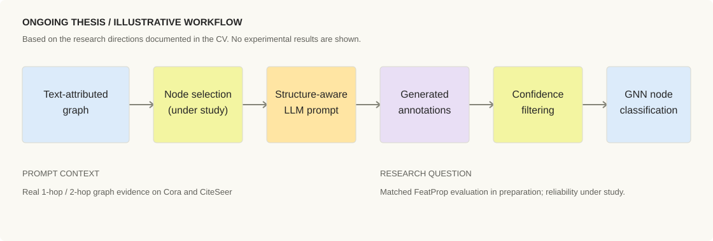

Amirkabir University of Technology
B.Sc. in Computer Engineering
- GPA
- 18.47 / 20
- 2022 Konkour rank
- 134 / 150,000+
Undergraduate thesis: A Structure-Aware LLM-Based Framework for Graph Node Labeling.
Data · AI · Software
Graph ML Researcher; Exploring LLM Limitations; Data Insights Analyst; BI Solutions Developer.
Computer Engineering undergraduate at Amirkabir University, working in retail analytics at EMRC and researching label-efficient graph learning with LLMs and GNNs.
I connect graph learning and language models with practical analytics. I also like turning ideas into working tools, from Python automation and neural-network components to operating-system extensions.
Computer Engineering at Amirkabir University of Technology, alongside teaching and applied training.
B.Sc. in Computer Engineering
Undergraduate thesis: A Structure-Aware LLM-Based Framework for Graph Node Labeling.
Amirkabir University of Technology
Head TA for Business Intelligence in Fall 2025: designed instructional materials and course projects, and taught Power BI, Python, SQL, and data modeling.
Data Analysis Certificate · Quera / Summer 2025
Advanced Python Bootcamp · Sematec / Sep–Dec 2024
Retail analytics, reporting automation and business intelligence work alongside my degree.
EMRC
Analyze retail datasets and deliver client-facing reports. Built a reusable Python application for an internal workflow; currently developing a customizable pipeline for client report generation.
YAS Arghavani System Engineering Co.
Bank Mellat IT Holding
Developed Power BI dashboards for POS performance and maintenance. Modeled transaction data with Power Query and DAX, and integrated CRM and payment systems for reporting.
Ongoing work at Amirkabir University of Technology on label-efficient graph node classification.

Developing a label-efficient node classification framework that combines LLM-generated annotations with graph neural networks on text-attributed graphs, in Dr. Mostafa Haghir Chehreghani's lab.
This work is ongoing. The directions below describe what I am investigating; they are not published findings or completed results.
Explore 1-hop and 2-hop neighbors and random walks as context for LLM-based graph node labeling.
Investigate active node selection to make more effective use of limited annotation resources.
Study confidence-based filtering of generated annotations and their use in training graph neural networks.
Applied machine learning, business intelligence and engineering implementations. For the complete set, browse the project archive.

A loan default prediction pipeline combining target encoding, financial feature engineering, Random Forest tuning, and cost-sensitive evaluation.
View repository
An interactive Power BI report exploring employee attrition, salary distributions, and hiring trends through data preparation and visual analysis.
View repository
Building neural network components from scratch: tensors, linear layers, activation and loss functions, backpropagation, and an SGD optimizer.
View repositoryAn autonomous agent using selection, crossover, mutation, and board evaluation.
xv6 kernel enhancements, a learning web app, JavaFX, and Android projects.
Research · Machine learning · Data · Software
Grouped by how I use them: investigating models, understanding data, and engineering systems.
Persian / Native · English / Full professional proficiency
For research opportunities, data analytics work, business intelligence or software projects, you can reach me here.